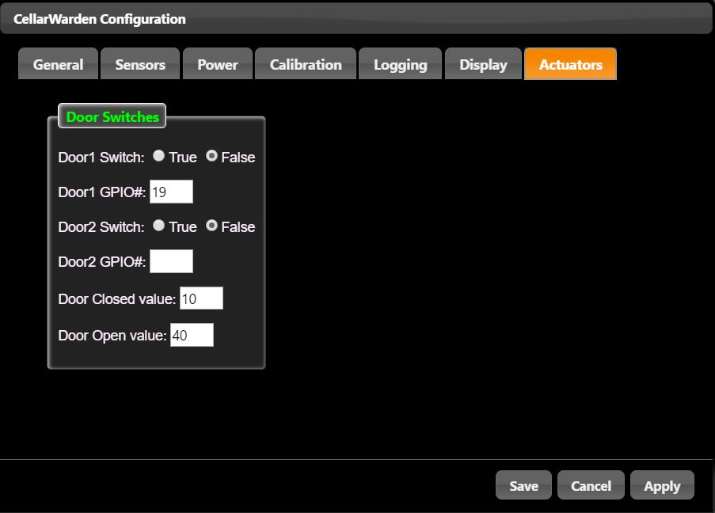

In order to function properly, CellarWarden must be configured to interact with hardware attached to the Raspberry pi. This can be configured by clicking on the Configure button of CellarWarden's home screen.
Server
Password Protect: Click True to require a password to operate CellarWarden. On page loads, a password dialog will open and request a password. Incorrect passwords will prevent access to CellarWarden's functions.
Password: Supply a password for CellarWarden.
Title: Title for this CellarWarden server, displayed on the Main Sensor graph. Allows for easy determination of which CellarWarden instance is being viewed. This can help if there are multiple CellarWarden instances.
Password: Supply a password for CellarWarden.
Server Address: The local server IP address on the LAN.
Server Port: The port for the server on the Raspberry Pi. Defaults to 8888.
Show Server Log: During operation, CellarWarden stores output to a file called server.log. Click this button to show the contents of this server log. This log can be useful for checking on connections from different users, and also for debugging purposes.
Clear Server Log: Click this button to clear out the server log. This is important because the server log can quickly become quite long. It is suggested that this log be cleared frequently, particularly after significant configuration changes have been made.
Miscellaneous
Temp Scale: Choose between Fahrenheit and Celsius. Note that while CellarWarden converts from Celsius to Fahrenheit when obtaining sensor values, it does not interconvert log files. Thus, it is important to set this correctly before commencing logging operations.
Reject Extremes: Set this control to True to prevent logging of errant temperature and humidity data that occurs occasionally due to errors in sensor polling (particularly for DHT sensors).
Reject Threshold: When Reject Extremes is true, this sets a threshold in which exceeding this value by less than or greater than e.g. 50 from the last time the sensor was polled will result in rejection of the data. This prevents invalid data from causing spikes in the logfiles.
Reboot RPi: Click this button to immediately reboot the Raspberry Pi. This will suspend all action on the client side until the server has rebooted. After rebooting, the CellarWarden server should restart and resume communication with the client app. This will be evident when the LCD display is updated. This feature is useful for testing the server to ensure that CellarWarden will restart on server reboots.
DHT Sensors
DHT#1/DHT#2 Type: Select between DHT11 or DHT22 humidity/temperature sensors for DHT1. If using an AM2302, select DHT22. If not using a sensor for DHT1 or DHT2, select None.
DHT#1/DHT#2 GPIO: The GPIO number that this sensor is connected to. Use the Broadcom/BCM number for this, as specified here.
DHT#1/DHT#2 Label: A descriptive label that will be displayed on the LCD display for this sensor.
One Wire Sensors
Load OneWire Devices: Loads an updated list of 1-wire devices connected to the 1-wire bus. While CellarWarden loads the list of 1-wire devices on bootup, adding or removing 1-wire devices from the bus will require that this button be clicked for proper display of the current list of devices.
oneW GPIO: Select the GPIO number that the 1-wire bus is connected to. This defaults to 4, although it is possible to specify a different GPIO number in Raspbian. This field does not automatically reconfigure the 1-wire bus, but serves as a reminder that this GPIO number is in use for 1-wire access.
onew1 ID: Click on this pulldown menu to select the 1-wire device ID for this sensor. Leave the device set to None if no device is connected. onew1-onew8 sensors will be set up in this manner.
onew1 Label: Provide a short but descriptive title for this sensor. Used for display on the LCD.
Note: Use the scrollbar on the right to scroll through all of the 1-wire devices.
This does not currently function, but will be provided in a future update of CellarWarden.
This tab provides a means to calibrate the temperature and humidity sensors. On the left, individual calibration values are provided for the DHT sensors. These include both temperature and humidity calibration. On the right, the 1-wire temperature sensors may be calibrated. In each case, you may either enter a positive or negative number, or use the up and down arrows to increment or decrement the offset. These offsets are added to (positive offset)/subtracted from (negative offset) the sensor's raw value before plotting and controller processing. To set calibration for a particular probe, it is suggested that an accurate measurement be made with a precision instrument (e.g. high resolution thermometer) in a range in which the sensor will operate, and compare that measurement with the value from this sensor. Enter an offset to bring this sensor in line with the precision sensor.
This tab provides options primarily for the main sensor and alarm logging function (for controller logging, see the Controller help screen).
Logging Options
Log File: Enter the name of the file to log sensor data and alarm annotations. The file is a comma delimited file, and the suggested suffix is .csv. This file is stored in ../CellarW/public. The file may also be opened by popular spreadsheet software such as Microsoft Excel.
Reset Logfile: Click this button to clear out all data from the logfile. Note that while this removes all data and alarm annotations from the logfile, it does not clear the list of triggered alarms.
Averaging: Set this to True to average the data from each sensor before writing to the log file.
Logging Increment: This sets the system-wide sampling rate for sensor logging both for the main logfile and for the controller log files. CellarWarden polls sensors roughly every three seconds, and logs data every nth time with n equal to the value of this parameter. Thus, if Logging Increment is set to 10, each sample in the log file will be taken at roughly 30 second intervals. As such log files can accumulate data rather quickly, it is suggested that a minimum of 10 be used to prevent slow client-side operations.
Logfile Compression
Because the main logfile can become very large over time, CellarWarden provides a method to compress or truncate the main log file. The truncate algorithm simply removes data older than a specified number of days. The compression algorithm deletes most data older than a specified number of days, but preserves a single record for a configurable number of minutes.
Compress Logfile: Set this to true to activate logfile compression.
Preserve detail until: All data older than this number of days will be compressed or truncated.
Keep old record each: Preserves a single record for each period (in minutes) set by this value on records older than the number of days specified. For example, if set to 60 minutes, only a single record for each 60 minutes will be kept for data older than the number of days specified by the Preserve detail until field. Set this to greater than zero for compression. Set this to zero for truncation (all records deleted older than the specified number of days).
Automatic Compression: Automatically compresses or truncates the logfile at the specified time each day.
Autocompress at: Enter the time (in military format) in which to run the compression/truncation routine each day.
Compress Now: Click this button to manually run the compression/truncation algorithm using the specified parameters.
This tab is used to configure the hardware LCD panel. This panel may be connected via a parallel connection requiring 6 GPIO pins, or via the I2C bus. CellarWarden supports I2C communications via an 8-port I2C port expander such as the PCF8574.
Use LCD Panel: Click this checkbox to activate the hardware LCD panel. This only affects the hardware LCD panel and does not impact display of the virtual LCD panel on CellarWarden's home page.
Type: Select Standard to use an LCD panel that communicates in parallel (e.g. via 6 GPIO pins). Select I2C to select serial communication over I2C via an 8-bit port expander such as the PCF8574. Note that if CellarWarden is unable to connect to the I2C-based LCD panel when in I2C mode (either on startup or during processing), the server will turn off the Use LCD Panel checkbox and report an error in the server logfile.
LCD Columns: Number of columns of the hardware and virtual LCD panels. For example, for a 20 x 4 LCD panel, this should be set to 20.
LCD Rows: Number of rows for the hardware and virtual LCD panels. Use 4 for a 20 x 4 LCD panel. While smaller panels such as 16 x 2 panels may be used, such panels will fail to provide sufficient detail. Thus, it is strongly recommended that only 20 x 4 (or larger) panels be used for CellarWarden.
The following fields are used only for I2C connected LCD displays...
I2C Bus: If using an LCD panel connected via I2C, indicate the I2C bus used. On a Raspberry Pi version 1 board, this parameter should be set to zero. On a revision 2+ board, this should be set to 1. More information about setting up the Raspberry Pi I2C bus can be found here.
Address: If using an LCD panel connected via I2C, indicate the device address for the LCD panel. This can be found using typing i2cdetect -y bus#, with bus# replaced with 0 or 1, depending on the I2C bus number.
The following fields are only applicable to "standard" parallel connected LCD displays...
Backlt GPIO#: Number of the GPIO pin connected to a backlight on a parallel-connected LCD. This is not required for the backlight on an I2C connected LCD. This is currently not used but will be revised in an updated version of CellarWarden.
Reset GPIO#: Use this field to set the GPIO pin connected to the reset pin on the parallel LCD.
Enable GPIO#: Use this field to set the GPIO pin connected to the enable pin on the parallel LCD.
Data_0-4 GPIO#: Use these fields to set the GPIO pins connected to the upper 4 bit data pins on the parallel LCD. Note that the order of these pins is important, so make sure to carefully note which GPIO pins are connected to each data pin. An example of connecting a parallel LCD panel is shown in the Hardware Examples help page.

Use this tab to configure Door Switch actuators.
Door1/2 switch: Set to True to configure a door switch.
Door1/2 GPIO#: Set the GPIO number on which this switch is connected. Note that the door is considered closed when this GPIO pin is pulled high (e.g. to 3.3V) by the switch.
Door Closed value: This value is used to set the minimal value when plotting door open events on the Sensor graph.
Door Open value: This value is used to set the maximal value when plotting door open events on the Sensor graph.
Save: Use this button to save all changes made to the CellarWarden configuration and close the Configuration dialog.
Cancel: Click this button to abandon any changes to the CellarWarden configuration
Apply: Save all changes in the CellarWarden Configuration dialog without closing.